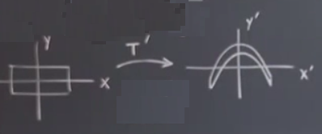
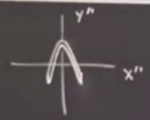
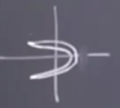
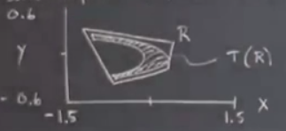
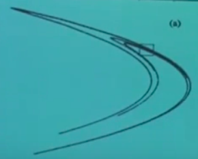
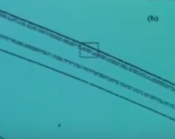
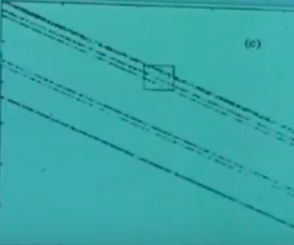
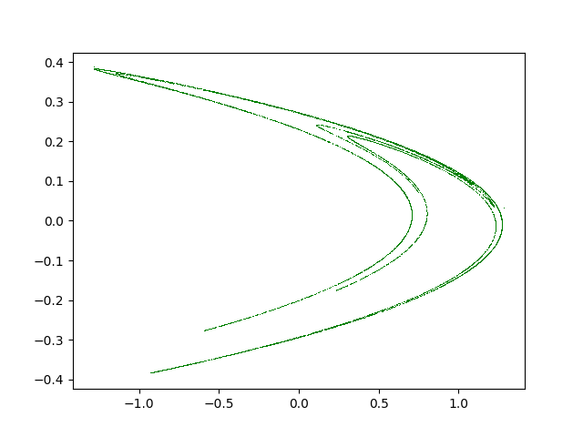

Ders 24
Önceki derste garip çekicilerden ve onların fraktal alt yapısından bahsediyorduk. Rossler çekicisinden bahsettik, ve zihinde canlandırmak için hamur, poğaça, vs. gibi örnekler kullandım, tuhaf katmanlı yapılar, bu dersin kendisi biraz tuhaftı zaten [öğrenciler gülüyor]. Belki bu tarif ettiklerimi görsel olarak daha ikna edici hale getirmem iyi olur. Bu derste Henon haritası denen bir kavram üzerinden bunu başarmaya uğraşacağım. Kitabımın 12.2 bölümünde Henon haritası anlatılıyor.
Bu konu ilk kez 1976'da araştırıldı, araştırmacı Michel Henon Fransız matematiksel astronomdu. Hikayeye göre M. Henon bır diğer Fransız fizikçi Eve Pamou'nun dersini dinliyordu, derste Lorenz sistemi anlatılıyor ki bu günlerde Lorenz sistemi müthiş popüler bir konu. 1963'te yayınlanmış, on sene kimse ona dikkat etmemiş, ama 70'lı yıllar ortasında birdenbire farkedilmiş, ve Lorenz'in gördükleri insanlara çok ilginç gelmeye başlamış, konuya daha derinden bakmak isteyenleri meraklandırmış. Herneyse Pomou konuyu meslekdaşlarına tanıştırmaya uğraşıyor, özellikle ilgilendiği bölüm, Lorenz'in daha önce aktardığımız ettiğimiz sözleri, "bu tam bir yüzey değil, sonsuz yüzeyler yapısı", yani birbirine çok yakın sonsuz tane katmanın oluşturduğu bir yapı. İşte Pomou bunu tarif etmeye uğraşıyordu, Henon'da bunları dinliyor, ve duyduklarını zihninde canlandırmaya uğraşıyor, ve Pomou bu sırada diyor ki "bu bahsedilen, olması gereken katmanları sayısal olarak çözemedim / göremedim, uğraştım ama olmadı".
Bu Henon'a bir fikir veriyor, belki garip çekicilerin fraktal yapısını görsellemenin daha farklı bir yolu vardır? Bu çaba birazdan anlatacağım bulgularına yol açtı. Yani Lorenz sistemin kendisiyle uğraşmak yerine, başka bir yolu denemek istedi. Gördüğümüz üzere Lorenz sisteminin çok kuvvetli hacim küçültme özelliği var, çekicinin gözü yakınında, bir kanatta, bir tür sonrası hacimleri neredeyse 14000 civarı oranında küçültüyor. Ama Henon dedi ki belki daha basit bir eşleme kullanabilirim, diferansiyel bir denklem çözmek yerine bir özyineli harita yaratabilirim. Ama bizim daha önce gördüğümüz tek boyutlu harita yerine Henon iki boyutlu bir harita kullandı, ve küçültme oranının dışarıdan bir parametre ile kontrol edilebilir hale getirdi.
Henon 2-D haritaları basit iki boyutlu haritalardır, ve bir garip çekiciye sahip olacak şekilde tasarlanmışlardır. Dikkat edilirse Henon'un konuya yaklaşımı / sezgilerinin Rossler'inkine benzediği görülecektir, esnetme, katlanma, tekrar enjekte, vs. gibi kavramlar burada da var (ama bu iki araştırma birbirinden bağımsızdı), haritası garip çekicilerin mikro yapısını ortaya çıkartacak şekilde tasarlanmıştır, ve bu yapının ilk direk görselleştirilmesi Henon sayesinde olmuştur.
Harita şöyle,
$$
x_{n+1} = y_n + 1 - a x_n^2
\qquad (1)
$$
$$ y_{n+1} = b x_n \qquad (2) $$
Parametre $a,b$ dışarıdan kontrol edilebilen parametreler. Gördüğümüz gibi harita iki boyutlu, girdi $x_n,y_n$ noktaları olacak, ve harita bunları baz alarak bize sonraki değerleri veriyor, $x_{n+1},y_{n+1}$. Bu işlemi düzlemdeki bir noktanın düzlemdeki bir başka noktaya zıplaması gibi hayal edebiliriz [düzlem çünkü iki boyutlu], bu zıplama ardı ardına olacak tabii, harita denklemlerine hesap yaptırdığımız sürece.
Niye bu harita? Farketmişizdir belki, harita $x_n^2$ terimi yüzünden gayrı-lineer, ama bu tek gayrı-lineer kısım, bu açından da Rossler sistemi gibi minimal gayrı-lineerlik içeriyor (Rossler bir diferansiyel denklemdir ve tek gayrı-lineerliğe sahip).
Peki faz uzayının esnetme, katlama sürecin nasıl parçası oluyor? $xy$ ekseninde duran bir dikdörtgen düşünelim. Bu size benim önceki (hamur) kütlesi, merdane örneğimi hatırlatabilir. İlk adımda onu esnetip katlayacağım. Burada ardı ardına uygulanan bazı transformasyonlar olacak, bu transformasyonları birleştirip tek bir nihai transformasyon oluşturacağım, ki bunların sonucu Henon haritası olacak. İlk transformasyonu $T'$ olarak isimlendirelim, $T$ üstü apostrof türev anlamında değil, 1. işlem anlamında.

Bu transformasyon $T'$ için denklem
$$ x' = x$$
$$ y' = 1 + y - ax^2$$
Yani $x$ için hiç değişim yok, $y$ için bir değişim var, $a$ bükülme miktarını kontrol ediyor. Sonra Henon bu bükülmüş objeyi alıyor ve onu $x$ ekseni boyunca, yanlardan içeri doğru yani, eziyor. Yani tam ezmiyor ama sıkıştırıyor. Bu transformasyona $T"$ diyelim, formülü
$$ x" = b x', \quad |b| < 1$$
$$ y" = y' $$
$b$ oranında sıkıştırma, küçültülme yapılıyor. $y$ de değişim yok. Resmin son hali,

Merak edenler olabilir, bunları niye yaptık? $b$'ye ne gerek var? Hatırlarsak Lorenz sisteminin bir özelliği hacmi küçültmesiydi. Bu hacim küçültmenin bu örnekteki karşılığı alan küçülten bir harita. İlk transformasyon, bükme yaptı evet, ama alan küçültmesi yapmadı. Bir determinant hesabı üzerinden bükülme öncesi ve sonrası alanların birbirine eşit olduğunu gösterebilirsiniz. Bu sebeple $b$ üzerinden gösterdiğimiz transformasyon adımına ihtiyaç var. Yani ikinci transformasyon ile sisteme yitirgenlik (dissipation) tanıştırmış olduk, ayrıca 2. adımda da bir bükülme var (yanlardan sıkıştırırken bükmüş oluyoruz).
Sonraki adım, tekrar enjeksiyon yapmak. Hamurdan hatırlarsak merdane ile yaydık, ezdik, katladık, şimdi eldeki hamuru alıp başa dönmek istiyoruz, yani tekrar ezmek, vs.. Tekrar enjeksiyon için Henon üstteki son duruma bakıyor, ilk baştaki resim yatay eksen boyunca uzayan bir nesneydi, üstteki dikeyde uzayan halde, Henon dikey ve yatay eksenleri değiştirmeye karar veriyor, yani üstteki nesneyi yana çeviriyor. $T"'$ yani,
$$ x"' = y" $$
$$ y"' = x" $$
Alttakini elde ediyoruz,

Üç transformasyonu ardı ardına uygulayarak bu noktaya geldik. Şimdi tüm bu transformasyonları tek adım $T$'de birleştiririz,
$$ T = T"' T" T'$$
Bu birleştirim sonrası (1)'i elde ettiğimizi görebiliriz (notasyonu zihnimizde $(x,y)$ yerine $(x_n,y_n)$, ve $(x"',y"')$ yerine $(x_{n+1},y_{n+1})$ olarak değiştirmek kaydıyla), ki $T(x_n,y_n) = (x_{n+1},y_{n+1})$ olsun.
Bu harita hakkında ilginç gözlemler nelerdir? Özellikleri nedir? Garip çekicisi neye benzer?
Özellikler
1) Harita tersine çevirilebilir (invertible): Eğer elimizde $(x_{n+1},y_{n+1})$ varsa, oradan özgün bir $(x_n,y_n)$'e erişebiliriz.
Bunun önemi ne? Başta Lorenz sistemine benzer olmak istediğimizden bahsettik, Lorenz sistemi diferansiyel bir denklem sistemidir ve bu sistemlerde herhangi bir gidiş yolunda zamanı geriye sarabilirsiniz. Ama bu durum lojistik harita için geçerli değil. Orada elimizde ters parabol var, bir $y$ değeri parabolu iki yerde keser, yani o $y$'lerde "geriye gitmek" yani $x$'i bulmak iki farklı seçenek ortaya çıkartır. Lorenz haritası tersi alınabilir değildir.
Kontrol edelim,
(1) ve (2)'den baslayarak $x_n,y_n$ denklemlerini bulmamiz gerekiyor yani. (2)'den baslayarak $X_n$'i bulabiliriz,
$$ x_n = \frac{y_{n+1}}{b}$$
Onu (1)] içine sokarsak,
$$ x_{n+1} = y_n + 1 - \frac{a}{b}(y_{n+1})^2 $$
ve
$$ y_n = x_{n+1} - 1 + \frac{a}{b^2}(y_{n+1})^2 $$
$x_n,y_n$'in geleceğe bağlı versiyonlarını bulmuş olduk. Yani bu sistem tersine çevrilebilir.
2) Alanları daraltıyor (Lorenz akışının hacim küçülttüğü gibi). Bunu nasıl kontrol edeceğiz? Belki bazılarınız Çok Değişkenli Calculus dersinde öğrenmiştir; bir alanı alıp başka bir alana eşliyoruz, alanların sonrası ve öncesi arasındaki oran, o transformasyonun Jacobian'ın determinantıdır, ki sonsuz küçük alanlar için de bu geçerlidir.
$$ \left[\begin{array}{rr} \frac{\partial x_{n+1}}{\partial x_n} & \frac{\partial x_{n+1}}{\partial y_n} \\ \frac{\partial y_{n+1}}{\partial x_n} & \frac{\partial y_{n+1}}{\partial y_{n+1}} \end{array}\right] = \left[\begin{array}{rr} -2ax_n & 1 \\ b & 0 \end{array}\right] $$
Determinant $-b$. O zaman alanların oranı $b$'nin büyüklüğü olur ($|b|$ yani). Eksi işareti niye ortaya çıktı? Çünkü eksenleri 3. adımda değiş-tokuş yaptık hatırlarsak, bu sebeple. Neyse, $|b| < 1$, o zaman alan küçülüyor, bu sebeple $b$ parametresi büyüklüğü 1'den küçük olacak şekilde seçilmiş.
Bu arada determinant sabit çıktı, bu küçülme oranı hep aynı kalacak demektir, yani her adımda aynı oran, o zaman küçülme sabit diyebiliriz. Lorenz sisteminde de benzer bir durum vardı, hacimlerin küçülmesi sabit. Küçülme üstel tabii ki, yani $e$ üsteli, ama bu azalma sırasında her zaman adımındaki faktör aynı.
Devam edelim, Lorenz sisteminin bir diğer anahtar özelliği kapan bölgesinin (trapping region) olmasıdır demiştik. Bir küre, ya da elipsoid vardır, bu bölgeye bir kez girince dışarı çıkmak mümkün değildir. Henon haritasında benzer bir durum var.
İki sistem arasında bir fark var tabii. Lorenz çekicisi global bir çekici, ne kadar uzaktan başlarsanız başlayın, belli bazı başlangıç şartları dışında çoğu şart bizi çekiciye götürür. Henon haritasında bu doğru değil, bu haritada global bir çekici yok. Bunu biraz düşünerek kendimiz bulabilirdik, sistemde bir $x^2$ terimi vardı değil mi? Eğer $x$ büyükse o zaman bu terimin etkilediği bir sonraki değişkenleri daha da büyük hale getirecektir. Yani gidiş yollarının sonsuzluğa gitmesi mümkün. Eğer orijinden yeteri kadar uzaktan başlarsanız dışarı "kaçabilirsiniz". O zaman,
3) İçinde o nihai garip çekiciyi barındıran bir kapan bölgesi var (ama her yörünge kapan bölgesine düşmüyor) çünkü bazıları $x^2$ sayesinde sonsuzluğa kaçıyorlar.
Grafiğini çizelim. Bu arada Henon $a=1.4,b=0.3$ seçti.

Bu grafiğin aslını Henon'un makalesinden alıp kitabımda gösterdim. Yapılan nedir? $R$ ile temsil edilen o dört çizgiyi Henon haritasına verince elde edilen şekil $R$'nin içindeki düz çizgillerle işaretlediğim kısım. Yani $R$ kendisine eşleniyor bir anlamda ve bir kez $R$ içine girerseniz bir daha dışarı çıkamıyorsunuz.
Peki Henon niye üstteki $a,b$ parametrelerini seçti? Bu seçimin "tam kararında" olmakla alakası var.
$b \approx 0$ ise, yani $b$ sıfıra yakınsa, kuvvetli bir katlanma ve ezilme oluyor. Bu niye istenmeyen bir şey? Yapmak istediğimizi hatırlayalım. Garip çekicinin katmanlarını görmek istiyoruz. Eğer bu katmanları çok fazla ezersek, Lorenz'in deneyimlediği probleme geri dönmüş oluruz, herşey birbirine çok yakın ve görmek zor.
$|b| = 1$ ise katlanma kaos üretecek kadar yeterli olmayabiliyor.
Henon deneme yanılma ile $b=0.3$'ü buldu, ve güzel resimler üretebildi.
İlkine bakalım,

Şimdi sadece üstte ufak kutuyla seçilen yere odaklanalım. İlk bakışta kabaca orada kalın bir çizgi var gibi gözüküyor. Orayı büyütürsek,

görülüyor. Çizgi zannettiğimiz içinde başka bir sürü şeyler olan bir grup.. Satürn'ün halkalarına benziyor bir bakıma. İlk başta üç tane birbirine yakın çizgi var sandık, ama yakından bakınca alttaki tek, üstündeki ikili, onun üstündeki üçlü çizgiler gibi duruyor. Üçlü olanı büyütürsek, yine ufak karenin içine düşen kısmını, alttakini elde ediyoruz,

Yine benzer bir şekli görüyoruz! Tekli, ikili, üçlü çizgiler aynen burada da var! İşte ardı ardına benzer bölgeleri büyütebiliriz, ve hep aynı şeyleri görürüz. Bunlar bahsettiğimiz katmanlar işte.
İlk grafiği çizecek bilgisayar programı alttadır,
def HenonMap(a,b,x,y):
return y + 1.0 - a *x*x, b * x
a =1.4
b = 0.3
x = 0.1
y = 0.3
X = []; Y = []
for n in range(10000):
x, y = HenonMap(a,b,x,y)
X.append(x)
Y.append(y)
plt.plot(X,Y, 'g,')
plt.savefig('24_01.png')
